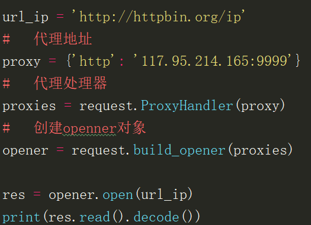
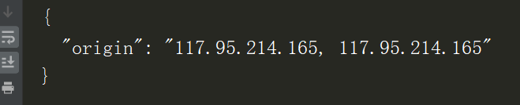

原文连接:https://www.cnblogs.com/jiyu-hlzy/p/11780041.html
- urllib库
- urllib3库
- 爬虫一般流程
urllib
urllib 是一个用来处理网络请求的python标准库，它包含4个模块
urllib.request 请求模块，用于发起网络请求
request模块主要负责构造和发起网络请求，并在其中添加Headers，Proxy等，利用它可以模拟浏览器的请求发起过程
发起网络请求 、添加Headers 、操作cookie 、使用代理
1、urlopen方法 一个简单发送网络请求的方法
url：字符串格式的url
data：默认会发送GET请求，当传入data参数时，则会发起POST请求，data参数是字节类型、者类文件对象或可迭代对象
timeout：设置超时（以秒为单位），如果请求超过设置时间，则抛出异常。timeout没有指定则用系统默认设置，timeout只对，http，https以及ftp连接起作用

2、Request对象
利用urlopen可以发起最基本的请求，但这几个简单的参数不足以构建一个完整的请求，可以利用更强大的Request对象来构建更加完整的请求
2.1、请求头添加 两种方式，一种可以添加多个，为字典类型，一种可以添加一个，为元组类型
通过urllib发送的请求会有一个默认的Headers:“User-Agent”:“Python-urllib/3.*”，指明请求是由urllib发送的
所以遇到一些验证User-Agent的网站时，需要我们自定义Headers把自己伪装起来
2.2操作cookie 在爬虫中，对cookie的处理非常重要
cookiejar 查看cookie信息
2.3设置代理


3、Response对象
read() 获取响应返回的数据，只能用一次 readline() 读取一行
info() 获取响应头信息
geturl() 获取访问的url
getcode() 返回状态码
urllib.parse 解析模块，用于解析URL
url中只能包含ascii字符，在实际操作过程中，get请求通过url传递的参数中会有大量的特殊字符，例如汉字，那么就需要进行url编码
字符串参数：parse.quote() 编码 parse.unquote() 解码
在发送请求的时候，往往会需要传递很多的参数，如果用字符串方法去拼接会比较麻烦，parse.urlencode()方法用来拼接字典类型的url参数
字典参数：parse.urlencode() 编码 parse.parse_qs() 解码
urllib.error 异常处理模块，用于处理request引起的异常
主要包含URLError和HTTPError
URLError：是error异常模块的基类，由request模块产生的异常都可以用这个类来处理
HTTPError：是URLError的子类，主要包含三个属性： Code:请求的状态码 reason：错误的原因 headers：响应的报头
urllib.robotparse 用于解析robots.txt文件
主要负责处理爬虫协议文件，robots.txt.的解析
robots.txt是一个协议，而不是一个命令
robots.txt是搜索引擎中访问网站的时候要查看的第一个文件
robots.txt文件告诉蜘蛛程序在服务器上什么文件是可以被查看的
urllib3
发起请求：urllib3.PoolManager().request()
响应对象提供status, data,和header等属性
JSON content
返回的json格式数据可以通过json模块，loads()为字典数据类型
可以通过提供字典类型的参数fields来添加查询参数
load为字典后，可以查看通过url编码过后传输的参数
Binary content
响应返回的数据都是字节类型，对于大量的数据通过stream来处理更好
ProxyManager
进行http代理操作
添加请求头Headers
提供字典类型的参数field来传递form表单数据
对于二进制的数据上传，我们用指定body的方式，设置Content-Type的请求头
爬虫开发流程
找到目标数据 分析请求流程 构造http请求 提取清洗数据 数据持久化